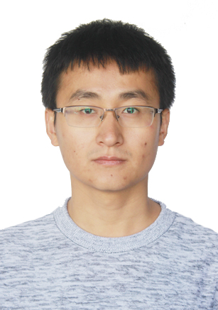

|  | Zhaoyan Shen 申兆岩 博士，副教授
主页: https://szyatsdu.github.io/shenzhaoyan.git.io/ 电邮: shenzhaoyan@sdu.edu.cn 地址: 山东省青岛市即墨滨海路72号山东大学N3楼414, 邮编266200 |
简介： 基于IOTA 区块链的毕业证书认证系统设计
源码： https://github.com/LiuXiangYuan/Certificate-authentication-system-based-on-blockchain.git
简介： 将手机屏幕实时投屏至显示器
源码： https://github.com/szyatsdu/MyCast